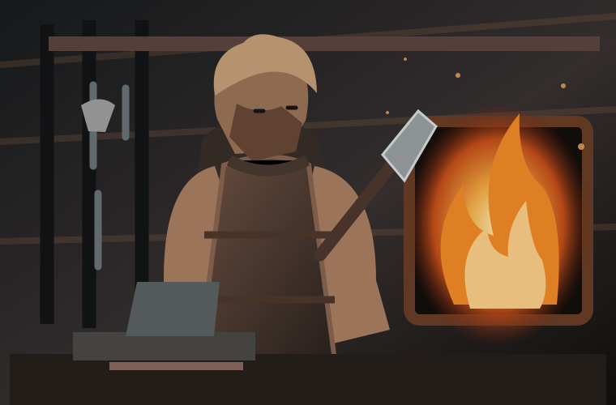
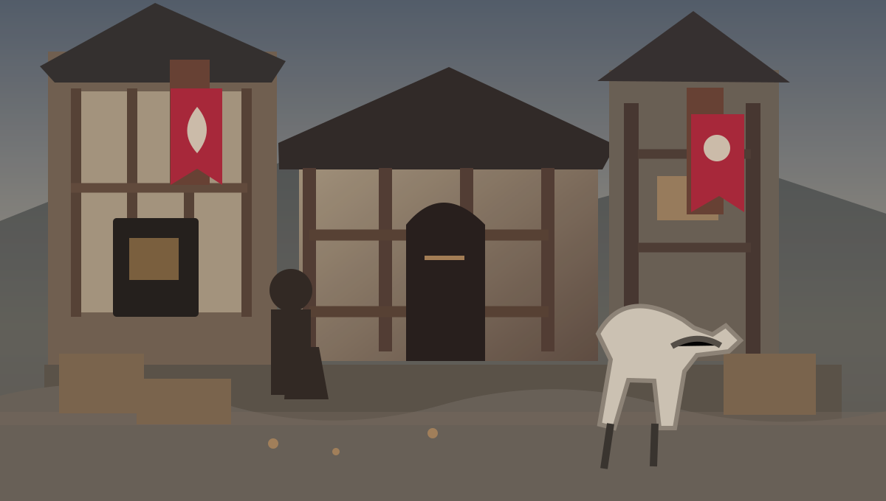
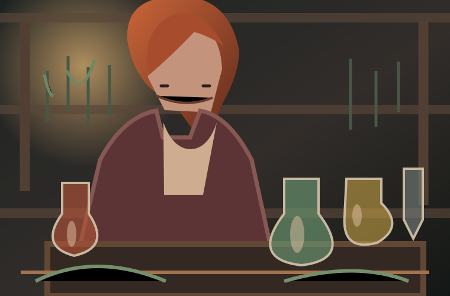

Character dossier
Complete public profile
View identity, allegiances, professions, gear, property, finances, and achievements in a dedicated profile page.
Open profile →The Vaelen Estate preserves Ülric’s established roleplay story in a public, read-only form. Explore his life, his family, his current character profile, and his new interactive equipment screen.
A story-first site with a dedicated character dossier and a read-only equipment interface built from Ülric’s established details.
View identity, allegiances, professions, gear, property, finances, and achievements in a dedicated profile page.
Open profile →
Hover over Ülric’s worn gear and carried equipment in a read-only visual layout inspired by an RPG character screen.
Open equipment →
The website no longer presents public editing tools. Visitors can explore the story without changing his official records.
Protected presentationA visual glimpse of the daily trades and places shaping the Vaelen family's story, from steel and alchemy to the road ahead.

The wider cast around Ülric’s story, kept distinct according to established roleplay details.
Twenty-seven years old. A sworn member of House von Dubá’s Watch, working toward the honor of knighthood.
Ülric’s brother and a companion in the Vaelen family enterprise.
A red-haired alchemist whose craft widens the family’s skill beyond steel.
Explore Ülric’s Watch service, the Tachov warehouse, the forge, and the milestones on his road to knighthood.
Confirmed events and ambitions presented publicly, without reader editing tools.
Ülric entered service with the Watch. His allegiance is now solely House von Dubá.
A property milestone in his pursuit of independence.
A major step in his progression as an armorer.
Offered at 225 groschen each. This is a listing, not a confirmed sale.
An aspiration, not a completed milestone.
Ülric’s current allegiance is solely to House von Dubá. His role in its Watch is confirmed, while knighthood remains a future aspiration.
Ülric has joined the Watch serving House von Dubá. The exact circumstances of his appointment and his duties will be recorded as they occur in roleplay.
He aspires to become a knight. No promotion, knighting ceremony, or noble title is recorded.